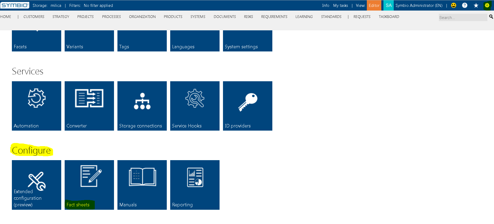
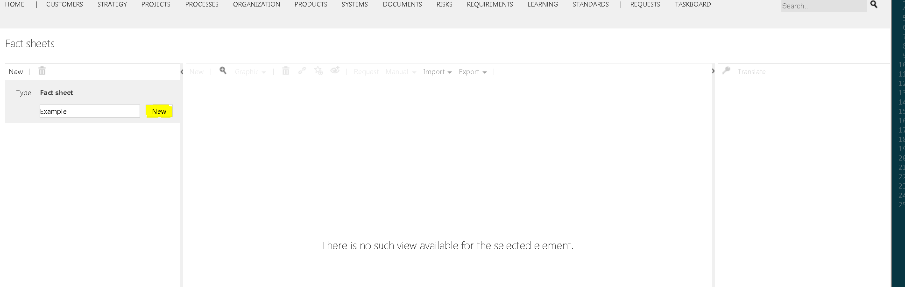
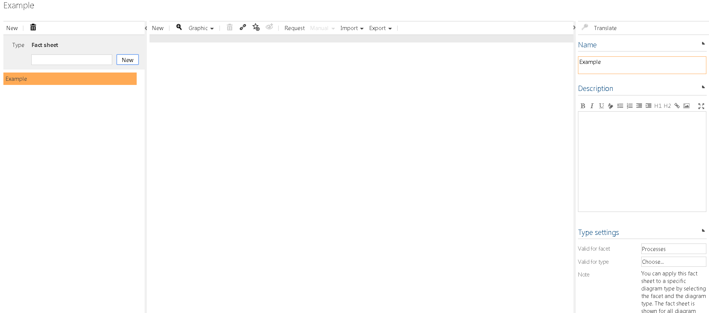
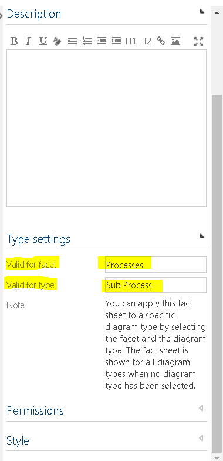
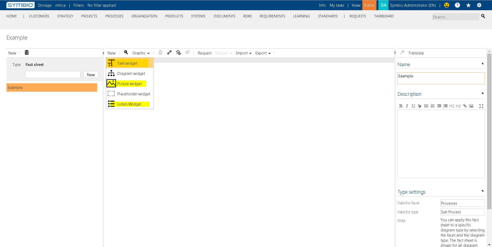
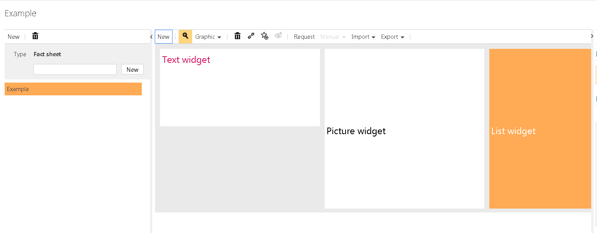
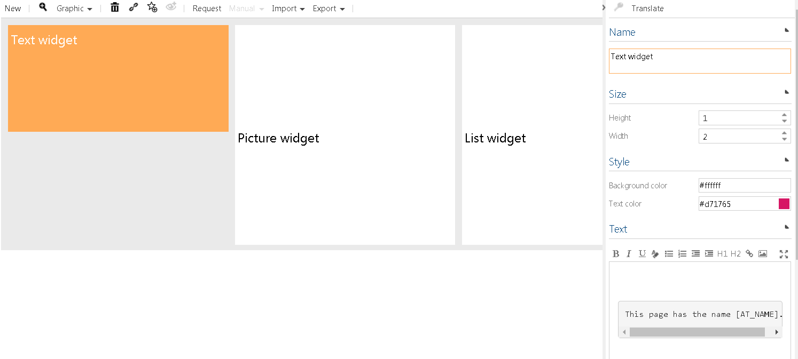
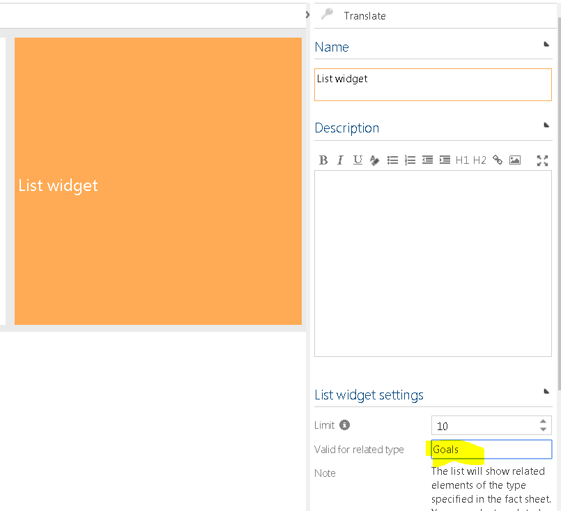

Creating fact sheets
The following example shows how to create and edit fact sheet for processes. Fact sheets can only be created by administrators.
Navigate to admin area and click on the Fact sheets tile.

On the left side of the screen insert a name for the fact sheet and click on New.


After creating new fact sheet, you will see in Detail content on the right side, options for that new fact sheet, such as Name, Description and Type Settings, Permissions and Style.
In Type Settings, you must choose the facet and element type for which the fact sheet is valid for. In our example, we will choose facet Processes and element type Sub Processes.

After you choose facet and element type you can move to the middle part of the screen, in the graphics view.
In the toolbar click on New, and choose from the dropdown list the desired widget.
In our example, we will choose Text Widget, Picture Widget and List Widget.  
When you click on each of widgets in the graphic view, you can define in the detail content options for each widget:
- Name: The title shown as a header in the widget, when displaying the fact sheet. -- Description: The description is shown below the header in the widget, when displaying the fact sheet.
- Size: The dimensions of the widget in units. The maximum width is 8.
- Style: Set a background and text color for the widget using the color picker, or using hex/rgb color values.
Furthermore, each widget offers additional options:
Text Widget
A text widget is a widget that displays are user-defined text.
- Text: Set a pre-defined text shown on each fact sheet. You can add additional format strings that are replaces when displaying the fact sheet to the actual value of the current element. For instance [AT_NAME] will be replaced to the Name of the sub process.

List Widget
A list widget provides an enumeration of related elements. In List widget settings you can set
- Limit: Maximum number of displayed related elements.
- Valid for related type: The related element type you would like to enumerate.

Diagramm Widget
A diagram widget shows a specified diagram of the current element. In Diagram widget settings you can select:
- Diagram graphic: The diagram you would like to display.
Picture Widget
A picture widget shows all images that have been added to a link attribute. In Picture widget settings you can select:
- Link attribute: The link attribute for which you would like to take the images from. A link attribute can contain multiple urls or file uploads. The widget will place the images in a column-based layout.

Placeholder Widget
A placeholder widget provides empty spaces in your fact sheet to allow more flexible layouts.
iFrame Widget
An iFrame widget will embed an external site into your fact sheet. You can specify:
- Url: An url to the external site. The preferred format is https://www.symbioworld.com
Report Widget
A report widget will embed an report you set up in the Reporting view in the admin area. You can specify a connection to the:
- Reports: Connect a report you would like to display in the fact sheet.
After setting up a fact sheet you can use the fact sheet